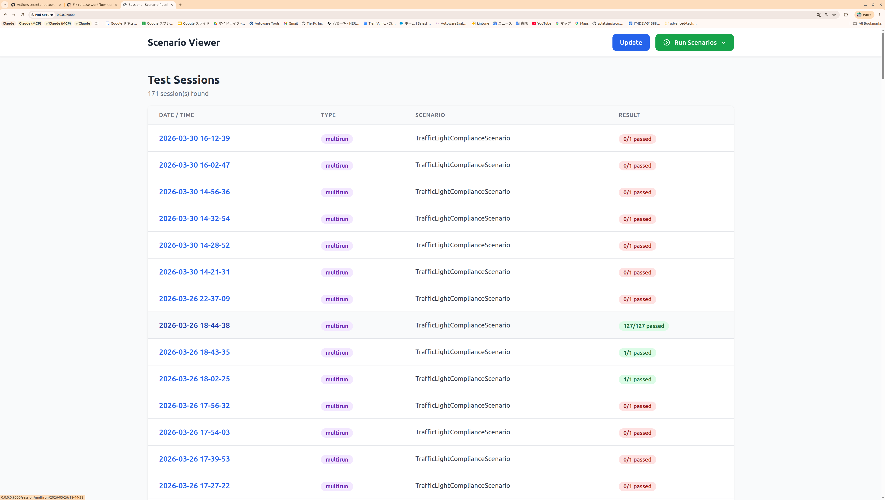
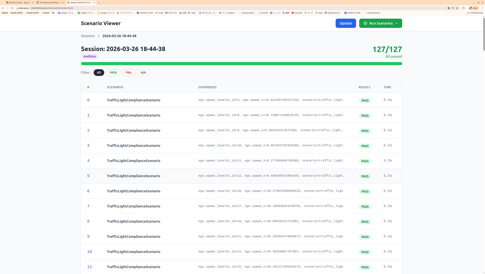
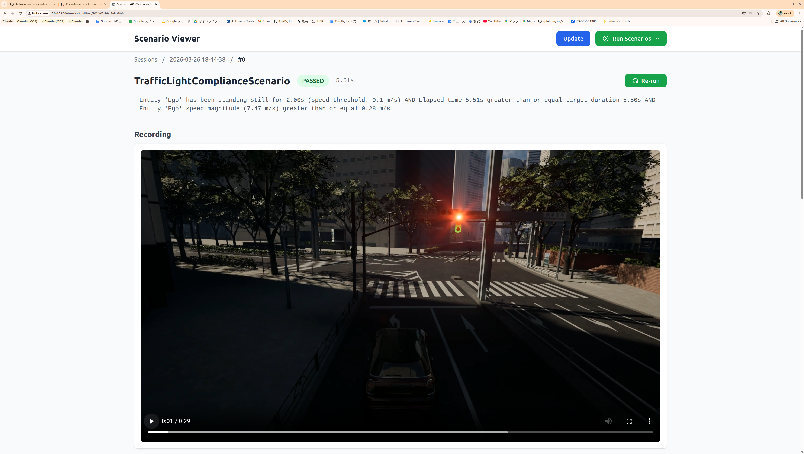
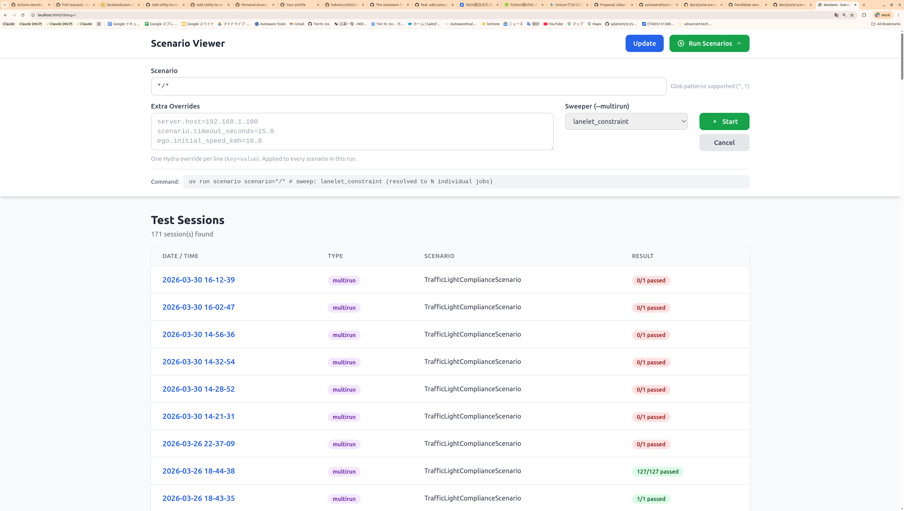

Tutorial: Writing Your First Scenario¶
This tutorial shows two paths to creating a scenario:
- Quick Start (recommended) — Use the bundled agent skills with a coding agent (Claude Code or Codex). Describe what you want in plain text and let the agent generate all files.
- Manual walkthrough — Understand every file by building one yourself.
Quick Start with a Coding Agent¶
The framework ships scenario-writing agent skills that a coding agent —
Claude Code or Codex — loads to walk you through a scenario:
it asks clarifying questions, writes the scenario class, config and YAML, runs
the static check, debugs the run in CARLA, reviews the parameters and adds the
sweep. In a Git repository — this checkout, or your scenario package's — one
command (the agent extra) installs the skills and starts the agent on your
description:
uv run scenario-agent claude "I want to test that the ego stops at a stop sign"
# or: uv run scenario-agent codex "..."
Writing Scenarios with a Coding Agent has the whole procedure: prerequisites, the options, the stages the agent goes through, editing the skills, and troubleshooting.
The rest of this page explains the manual process. Read on if you want to understand what the skills generate under the hood.
Key Concepts¶
| Term | What it is | File type |
|---|---|---|
| Abstract scenario | Reusable Python class that defines what to test (conditions, actions, entities). | *.py |
| Config dataclass | Typed parameters the scenario accepts (timeout, speed, lanelet IDs, ...). | *.py |
| Concrete scenario | YAML file that binds an abstract scenario to specific parameter values. | *.yaml |
One abstract scenario can have many concrete variants (straight, left turn, right turn, etc.).
Step 1 — Create the Config Dataclass¶
Add your config to src/autoware_carla_scenario/examples/configs.py:
@dataclass
class MyScenarioConfig:
"""Parameters for my custom scenario."""
name: str = "my_scenario"
#: Lanelet IDs the ego should visit.
expected_lanelet_ids: list[int] = field(default_factory=lambda: [460])
#: Fail-safe timeout in seconds.
timeout_seconds: float = 10.0
Every field becomes overridable from the YAML side via Hydra.
Step 2 — Create the Abstract Scenario¶
Create src/autoware_carla_scenario/examples/my_scenario.py:
from __future__ import annotations
import typesafe_carla.carla as carla
from autoware_carla_scenario import (
EGO_ROLE_NAME,
AndCondition,
BaseCondition,
BaseScenario,
EgoConfig,
EntityLanePositionCondition,
GroundProjectionConfig,
Lanelet2Pose,
StickyCondition,
TimeoutCondition,
TrafficLightTarget,
TrafficSignalAction,
)
from .configs import MyScenarioConfig
class MyScenario(BaseScenario):
"""Verify the ego visits every expected road."""
# Every attribute assigned on self, declared at class level: the static
# check (docs/typecheck.md) refuses one it has not seen declared.
_config: MyScenarioConfig
def __init__(
self,
ego_config: EgoConfig,
spawn_pose: Lanelet2Pose,
config: MyScenarioConfig | None = None,
ground_projection: GroundProjectionConfig | None = None,
) -> None:
super().__init__(
ego_config, spawn_pose=spawn_pose,
ground_projection=ground_projection,
)
self._config = config or MyScenarioConfig()
def setup(self) -> None:
# 1. Snap ego spawn to CARLA road surface
self._setup_ego_spawn()
cfg = self._config
# 2. Every traffic light green from the start: the route below
# crosses a signalised junction, and an ego that stops at a red
# light would pass or time out on the light's phase.
self.register_init(
TrafficSignalAction(
state=carla.TrafficLightState.Green,
lanelet2_traffic_light_ids=TrafficLightTarget.ALL,
label="set_all_green",
)
)
# 3. Build pass condition — "ego visited all expected roads"
stickies: list[BaseCondition] = []
for ll_id in cfg.expected_lanelet_ids:
stickies.append(
StickyCondition(
EntityLanePositionCondition(
EGO_ROLE_NAME,
Lanelet2Pose(lanelet_id=ll_id, s=0.0),
label=f"ego_on_lanelet_{ll_id}",
)
)
)
# AndCondition needs at least two children: a single lanelet (the
# default) is its own pass condition.
visited_all: BaseCondition
if len(stickies) == 1:
visited_all = stickies[0]
else:
visited_all = AndCondition(stickies)
self.register_pass_condition(visited_all)
# 4. Fail-safe timeout
self.register_fail_condition(
TimeoutCondition(cfg.timeout_seconds, label="timeout")
)
def is_done(self) -> bool:
return False
Anatomy of setup()¶
Every scenario follows the same structure:
- Spawn — call
self._setup_ego_spawn()(snaps the Lanelet2 pose to the CARLA road surface). - Pass conditions — register one or more conditions via
self.register_pass_condition(). The scenario passes as soon as any pass condition fires (returns a result), not when all of them have. To require several things, combine them in oneAndCondition, wrapping each state that only has to be visited once in aStickyCondition, as the example above does. - Fail conditions — register via
self.register_fail_condition(). If any fail condition fires, the scenario fails. On each tick the pass conditions are checked before the fail conditions, so a pass and a fail on the same tick ends the run as a pass. - Actions (optional) — e.g.
TurnAction, or theTrafficSignalActionabove, whichregister_initruns once as the scenario starts. Without it the lights keep CARLA's own cycle, and an ego that obeys them (the default TrafficManager ego does) waits at a red light for as long as it lasts.
Discovering available Conditions and Actions
Run grep -r "class.*Condition" src/autoware_carla_scenario/conditions/ and
grep -r "class.*Action" src/autoware_carla_scenario/actions/ to see
everything the framework provides.
Step 3 — Register the Scenario¶
In src/autoware_carla_scenario/examples/run.py, import the classes beside
the other built-ins (add MyScenarioConfig to the existing
from .configs import (...)) and register it after the others with
_register_builtin_scenario, which run.py already imports from the
registry:
from .configs import MyScenarioConfig # in the existing `from .configs import (...)`
from .my_scenario import MyScenario
_register_builtin_scenario("my_scenario", MyScenario, MyScenarioConfig)
The first argument ("my_scenario") is the name referenced in YAML's
scenario.name field. run.py does not import the public
register_scenario: what it registers is recorded as a built-in, so an
installed scenario package that replaces it is warned about (see
Packaging Scenarios in a Separate Package).
A built-in's name also belongs in
autoware_carla_scenario.scaffold.names.BUILTIN_SCENARIO_NAMES (sorted), which
scenario-new refuses as a package's scenario name; test_scaffold.py checks
the list against what run.py registers.
List the new module for the library check¶
The framework's own source is compiled with Codon a module at a time
(uv run scenario-check --library, Checking the framework itself),
and src/autoware_carla_scenario/typecheck/library.py must name every module
of the package, either in CHECKED or in EXCLUDED with a reason.
test_typecheck_library.py::test_every_module_is_either_checked_or_excluded
fails until autoware_carla_scenario.examples.my_scenario is in one of them.
The other built-in scenario modules are in CHECKED, kept sorted; add yours
there and check that it compiles:
If it does not compile yet, list it in EXCLUDED as NOT_YET_CHECKED
instead.
Prefer a separate package for reusable scenarios
register_scenario (and register_conf_dir) are part of the public API:
from autoware_carla_scenario import register_scenario. If your scenario is
not meant to ship inside the framework, put it in its own package instead of
editing run.py — see
Packaging Scenarios in a Separate Package.
Step 4 — Write a Concrete Scenario (YAML)¶
Create src/autoware_carla_scenario/examples/conf/scenario/my_scenario/default.yaml:
# @package _global_
scenario:
name: my_scenario
expected_lanelet_ids: [460, 265]
# 5 m to the stop line, across the junction (every light is set green)
# and onto the lane beyond it, from 5 km/h.
timeout_seconds: 15.0
ego:
initial_speed_kmh: 5.0
spawn_lanelet_id: 242
spawn_s: 25.0
# @package _global_
This Hydra directive is required on the first line. It tells Hydra to merge the file into the root config, not into a nested key.
Minimal checklist¶
- [x]
scenario.namematches the registered name ("my_scenario") - [x]
ego.spawn_lanelet_idis a valid lanelet ID in the target map - [x]
ego.spawn_sis within the lanelet length
Step 5 — Run It¶
# Single run
uv run scenario scenario=my_scenario/default
# Batch — run all variants under my_scenario/
uv run scenario scenario='my_scenario/*'
# Override a parameter on the fly
uv run scenario scenario=my_scenario/default scenario.timeout_seconds=20.0
Step 6 — Check Results in the Viewer¶
# Start the viewer (defaults to port 9000)
uv run viewer
# Or scan another project: the directory containing outputs/ and multirun/
uv run viewer --base-path /path/to/project
Open http://localhost:9000 in your browser. The viewer has three levels of navigation:
1. Session list¶
The top page lists every test session with its timestamp, run type
(multirun / single), scenario name, and overall result.

Each row is color-coded: green for all-passed, red if any scenario failed. Click a session to drill down.
2. Session detail¶
Inside a session you see every concrete scenario that was executed. For multirun (sweep) sessions, this can be hundreds of rows — each with its parameter overrides, individual PASS/FAIL badge, and execution time.

The progress bar and counter at the top (e.g. 127/127 All passed) give an at-a-glance summary. Use the PASS / FAIL / N/A filter buttons to narrow the list.
3. Concrete scenario detail¶
Click any row to open the detail view for a single concrete scenario. Here you can see:
- Pass/Fail status and elapsed time
- Condition tree — the evaluated condition expression showing exactly which sub-conditions were met
- Trajectory log — the path of the run's
trajectory.jsonl, which theautoware_carla_scenario_rerunpackage (convert) turns into a Rerun recording to watch the run in the Rerun viewer (Seeing a run); the screenshot below predates 15.0.0, when this was a video

The Re-run button in the top-right corner lets you re-execute the same scenario directly from the viewer.
4. Running scenarios from the viewer¶
You can also launch scenario runs directly from the browser without using the CLI. Click the Run Scenarios dropdown in the top-right corner to open the run form.

The form lets you configure:
- Scenario — a glob pattern to select which scenarios to run (e.g.
*/*for all scenarios) - Extra Overrides — Hydra overrides applied to every scenario in the run
(one
key=valueper line, e.g.server.host=192.168.1.100) - Sweeper — select
lanelet_constraintto run a multirun sweep across matching lanelets
Click Start to begin execution. The generated command is shown at the bottom of the form for reference. Results appear in the session list below once the run completes — click Update to refresh.
Additional notes¶
- The viewer scans
outputs/(single/batch runs) andmultirun/(sweep runs) for*_result.jsonfiles. Click Update if you ran a scenario while the viewer was open.
Adding Sweep (Parametric Testing)¶
To test the same scenario across many lanelets automatically, add a sweep
section to the YAML, say as conf/scenario/my_scenario/sweep.yaml:
# @package _global_
scenario:
name: my_scenario
expected_lanelet_ids: [460, 265]
timeout_seconds: 15.0
ego:
initial_speed_kmh: 5.0
spawn_lanelet_id: 242
# Off the lanelet's start, which can sit on the seam between two
# OpenDRIVE roads; inside every lanelet the sweep picks (30 m or more).
spawn_s: 5.0
sweep:
constraints:
ego.spawn_lanelet_id:
- type: and
constraints:
# Long enough for the spawn above, short enough to leave in the
# timeout from 5 km/h.
- type: lanelet_length
rule: greater_than_or_equal
value: 30.0
- type: lanelet_length
rule: less_than_or_equal
value: 60.0
- type: not
constraint:
type: is_junction
# Nor one the map draws no 3D model for.
- type: not
constraint:
type: in_set
values: ${map.no_3d_model_lanelet_ids}
# Nor one that leads into a junction: nothing here tells the ego
# which way to take through it, so it could leave by another lane
# than the one the route below expects.
- type: not
constraint:
type: previous_of
constraints:
- type: is_junction
# Nor one that leads onto a lanelet with no 3D model: the route
# below ends there, so CARLA must draw it too.
- type: not
constraint:
type: previous_of
constraints:
- type: in_set
values: ${map.no_3d_model_lanelet_ids}
bindings:
# The spawn lanelet and the lanelet after it: the route the run asserts,
# replaced with each pick. Without it every case would still expect
# [460, 265], which almost no spawn leads to.
# A pick with no lanelet after it has no such route and is skipped; where
# the lane splits in two, the lower lanelet ID is taken.
scenario.expected_lanelet_ids:
type: route_through
depth: 1
Every swept key that a case depends on must move with the pick: a value
outside sweep: that only fits the fixed case (a spawn_s beyond a shorter
lanelet's end, a route from another lanelet) is kept as it is for every case.
Even so, a pick where the lane splits in two outside a junction (7 of the
80 cases on the default map) expects the branch with the lower ID, and the
default TrafficManager ego, told nothing about which way to go, may take
the other; an ego that plans its own route to the goal does not.
The shipped sweeps do the same -- intersection_passing/straight binds
ego.spawn_s with stop_line_offset and the route with route_through
(Usage). Check what a sweep expands to, without CARLA, before
running it:
Run as a multirun:
The sweeper evaluates constraints against the Lanelet2 map and generates one
job per matching lanelet. Results appear under multirun/ in the viewer.
Packaging Scenarios in a Separate Package¶
The manual walkthrough above adds scenarios inside autoware_carla_scenario
(examples/configs.py, examples/my_scenario.py, examples/run.py,
conf/scenario/...). That is fine for scenarios shipped with the framework, but
for your own scenarios it is often better to keep them — and their config
dataclasses — in a separate, installable package that depends on the
framework. This keeps your scenarios reusable and versioned independently, with
no fork of autoware_carla_scenario.
A ready-to-copy template lives at
examples/scenario_package_template/.
Quickest path — generate one with scenario-new¶
Instead of copying the template by hand, generate a fresh package (the files below are rendered from Jinja2 templates):
# scenario-new <package-name> [--scenario NAME] [--output-dir DIR] [--description TEXT] [--force]
uv run scenario-new reach_goal_pkg --scenario reach_goal
This writes a ready-to-install package:
reach_goal_pkg/
├── pyproject.toml # name + entry point filled in
├── README.md # how to install, run and check it
├── tests/test_typecheck.py # the static check of its scenarios
└── src/reach_goal_pkg/
├── __init__.py # register() wired up
├── reach_goal.py # ReachGoalScenario
├── configs.py # ReachGoalConfig
└── conf/scenario/reach_goal/default.yaml
Its ReachGoalConfig has the template's __post_init__: it refuses a
timeout_seconds that is not finite and positive (0, nan), naming
scenario.timeout_seconds, when the config is built -- before anything
starts, since a run builds it in check_batch_configs.
scenario-new refuses a package directory that already exists. With
--force (force=True in the Python API) it replaces the whole directory, as
the scenario editor's package export (export_package(..., force=True)) does:
nothing under it is
kept, neither the files of a scenario generated there before (which would
still be registered through register_conf_dir but no longer import) nor files
added by hand. The package is written into a temporary directory beside the
target and moved into place once complete, so a run that fails (a read-only
directory, an --output-dir that is a file) leaves nothing half-written, and
under --force the earlier package as it was; scenario-new prints
Error: ... and exits with 1.
The scenario module sits beside __init__.py, configs.py and conf/, and
importing it binds its name in __init__.py, so configs, conf and the
names __init__.py defines (register, register_scenario,
register_conf_dir) cannot be scenario names; scenario-new refuses them
(including when they come from the package name, as in configs_package).
Nor can a scenario take the name of a module the generated package imports:
math and dataclasses (configs.py), logging and typesafe_carla
(scenario.py), pathlib (__init__.py), autoware_carla_scenario, and enum, which the static
check's prelude (typecheck.transform.PRELUDE) imports into every module it
compiles. Codon resolves an import to a module beside the importing one first,
so a scenario module math.py would
replace the standard library's math in configs.py, and the package would
fail its own static check (cannot import name 'isfinite' from
'<pkg>.math'). scenario-new -s math is refused with Error: scenario name
'math' is reserved: the generated package imports the module 'math' .... The
list is read off the rendered templates and the prelude, so it follows them; other
standard-library names (signal, queue, ...) are fine as scenario names.
Nor can a scenario take the name of a built-in scenario (adversity,
cut_in, intersection_passing, lane_change, pedestrian_dart_out,
temporary_stop, traffic_light_compliance): once installed, the package's
register() would replace the built-in, while Hydra still finds the
built-in's configs first, so scenario=lane_change/left would hand
LaneChangeConfig's keys to the package's scenario and fail.
scenario-new --scenario lane_change (or a package name such as
lane_change_pkg) is refused with Error: scenario name 'lane_change' is
reserved: it names a built-in scenario .... The list is
autoware_carla_scenario.scaffold.names.BUILTIN_SCENARIO_NAMES, a plain
constant so that scenario-new need not import the runner or CARLA; a test
checks it against what the runner registers.
Nor can it take the name of a built-in scenario config group, a directory of
the framework's conf/scenario/ (such as lane_change_fail, whose configs
reuse the lane_change builder): the package's configs would land in the
same Hydra group, so scenario='lane_change_fail/*' would also run the
built-in left and right, and a package config named left.yaml would be
shadowed by the built-in one. scenario-new reads the groups from the conf
tree the framework ships, and refuses them with Error: scenario name
'lane_change_fail' is reserved: it names a built-in scenario config group ....
The scenario name, after it is snake-cased (-s MyScenario becomes
my_scenario, -s cut-in.v2 becomes cut_in_v2), must be a lower-case ASCII
letter followed by lower-case ASCII letters, digits and _
(^[a-z][a-z0-9_]*$, scaffold.names.SCENARIO_NAME_PATTERN, the rule the
Scenario Editor holds an id to). Hydra's override grammar allows only ASCII
letters in an id, so no override could select café's configs (token
recognition error at: 'é') even though café is a Python identifier:
scenario-new my_pkg -s café is refused with
Error: scenario name 'café' must match ^[a-z][a-z0-9_]*$ ...: Hydra's override
grammar could not select it ... and writes nothing (#1858).
The package name is the import name and, hyphenated, the distribution name of
what gets installed, so scenario-new also refuses one that would clash once
installed: the framework's own (autoware_carla_scenario /
autoware-carla-scenario, in any spelling that normalises to it), which would
make the package depend on itself and replace the framework on
uv pip install -e; another top-level module the framework ships
(hydra_plugins, a namespace package: a regular package of that name hides
the framework's Hydra searchpath plugin and sweeper once installed); a
standard-library module (json, typing, ...); and the
import name of one of the framework's run-time dependencies (openodd,
lanelet2, typesafe_carla, hydra, numpy, ...). A name that only contains
one of them, such as openodd_scenarios_pkg, is fine.
A --description goes into pyproject.toml on one line: its line breaks
(\n, \r, U+2028, ...) are folded into spaces, since project.description
must be a single line and uv build refuses the package otherwise. The
package's docstring keeps it as given. The Scenario Editor's package export
folds a scenario's description the same way.
uv pip install -e reach_goal_pkg
uv run scenario scenario=reach_goal/default map=nishishinjuku
# Static check, before CARLA starts: only this package's scenarios.
uv run scenario-check scenario='reach_goal/*'
scenario-check compiles the scenario with Codon and reports a type error, a
misspelled config key or a bad value at its line; see Static check.
The generated package has a tests/test_typecheck.py that runs it under pytest.
The same generator is available programmatically:
from autoware_carla_scenario.scaffold import create_scenario_package
create_scenario_package("reach_goal_pkg", scenario_name="reach_goal",
output_dir="~/pkgs")
The rest of this section explains what the generated files contain.
What a scenario package needs¶
| Piece | Where | API used |
|---|---|---|
| Scenario class | your package *.py |
subclass BaseScenario |
| Config dataclass | your package configs.py |
plain @dataclass |
| Concrete YAML | your package conf/scenario/<name>/*.yaml |
Hydra |
| Registration | your package __init__.py |
register_scenario, register_conf_dir |
| Discovery | your pyproject.toml |
autoware_carla_scenario.scenarios entry point |
Register at import time¶
Everything you need is part of the framework's public API — import it from
the top-level package, not from examples:
# my_scenario_package/__init__.py
from pathlib import Path
from autoware_carla_scenario import register_conf_dir, register_scenario
from .configs import MyScenarioConfig
from .my_scenario import MyScenario
def register() -> None:
register_scenario("my_scenario", MyScenario, MyScenarioConfig)
register_conf_dir(Path(__file__).parent / "conf")
Shared parameters (ego, map, server, entity, ...) are also public, so
your config module reuses them instead of redefining them:
Advertise the entry point¶
In your package's pyproject.toml, declare the entry point so the scenario
CLI discovers your register() automatically when the package is installed:
[project.entry-points."autoware_carla_scenario.scenarios"]
my_scenario_package = "my_scenario_package:register"
Run it — no framework edits required¶
uv pip install -e path/to/my_scenario_package
# Your scenario is discoverable by name, exactly like a built-in:
uv run scenario scenario=my_scenario/default map=nishishinjuku
uv run scenario scenario='my_scenario/*' map=nishishinjuku
At start-up the runner calls load_scenario_plugins(), which loads every
installed autoware_carla_scenario.scenarios entry point (registering your
scenarios and conf/ directory). A bundled Hydra SearchPathPlugin then adds
every registered conf/ directory to Hydra's search path. The map, ego,
server, and entity config groups still come from the framework's built-in
conf/, so your package only ships the scenario/ group it actually owns.
The result viewer (uv run viewer) loads the packages the same way: its Run
panel lists your scenarios, matches them in globs such as my_scenario/*,
and expands their sweeps.
Scenario names share one registry, so give yours a name nothing else uses.
Entry points load in a fixed order, sorted by distribution name (normalised,
so my-pkg and my_pkg sort together) and then entry-point name, and every
conf/ directory joins Hydra's search path in that order, behind the
framework's own, which load_scenario_plugins() registers before any of
them. Hydra composes a config path such as
scenario/my_scenario/default.yaml from the first directory that has it.
What happens to a name that is already taken depends on who took it:
- A built-in scenario, or one registered explicitly before the plugins
load (a package whose
register()a custom runner calls itself, as in the "No entry point?" tip below, counts as a built-in here): the plugin replaces it, andload_scenario_plugins()logs a warning naming the entry point and every scenario name it replaced. The built-in configs are still composed from the framework'sconf/, soscenario=lane_change/leftwould handLaneChangeConfig's keys to the plugin's class, which is whyscenario-newrefuses built-in names (#1802):
WARNING ... The scenario plugin 'my_scenario_package'
(my_scenario_package:register) replaced 'lane_change', registered before
the plugins loaded ...
This holds whether or not the runner (examples.run, which registers the
built-ins when it is imported) was imported before the plugins loaded: the
viewer and scenario-expand load them first. The built-in names are known
without importing it, and the runner, imported later -- or by the plugin's
own register(), after it registered the name -- does not take the name
back from the plugin that replaced it.
- Another installed package: the package loaded first keeps the name,
and the later one is not loaded at all. Everything it registered with the
scenario registry while loading -- every scenario it added or changed, a
document included -- and every
conf/directory it registered are undone, so none of its configs is on Hydra's search path and a run never mixes one package's class with the other's YAML. The warning names both entry points (#2034):
WARNING ... The scenario plugin 'pkgb' (pkgb:register) was not loaded: it
registers scenario(s) an earlier plugin of the walk already registered
('dup' from 'pkga' (pkga:register)) ...
Only what the refused package registered itself is undone, and the
framework's state comes back whole: a built-in its register() registered
as a side effect (importing anything under autoware_carla_scenario.examples,
such as examples.configs to subclass a built-in config, imports the
runner) stays; a built-in it replaced gets the built-in back, even when its
own import of the runner is what registered it; and the framework's conf/
stays registered. What it registered elsewhere when it was imported (traffic
backends, ODD builders, authoring specs, ...) is not undone. Rename the
scenario in one of the packages to install both.
Config paths are checked as well, in every group (scenario/, map/,
ego/, ...): registering a conf/ directory that ships a path an earlier
directory -- the framework's own, or another package's -- already provides
logs a warning naming both directories and the one Hydra uses, since the later
copy is never read. Only the new directory is scanned (what the earlier ones
provide is indexed), so registering hundreds of packages stays cheap. A package's conf/scenario/lane_change/left.yaml is
shadowed by the built-in one, for example:
WARNING ... The config directory /.../my_pkg/conf ships 1 config path(s) already
provided by /.../autoware_carla_scenario/examples/conf, which comes earlier on
Hydra's search path: scenario/lane_change/left.yaml. Hydra composes these from
the earlier directory and never reads the copies here ...
No entry point? Register explicitly.
If you prefer not to rely on entry-point discovery (e.g. from a custom
runner script), just call your register() — or register_scenario /
register_conf_dir directly — before invoking the runner. The entry point
is only what lets the stock scenario CLI find you automatically.